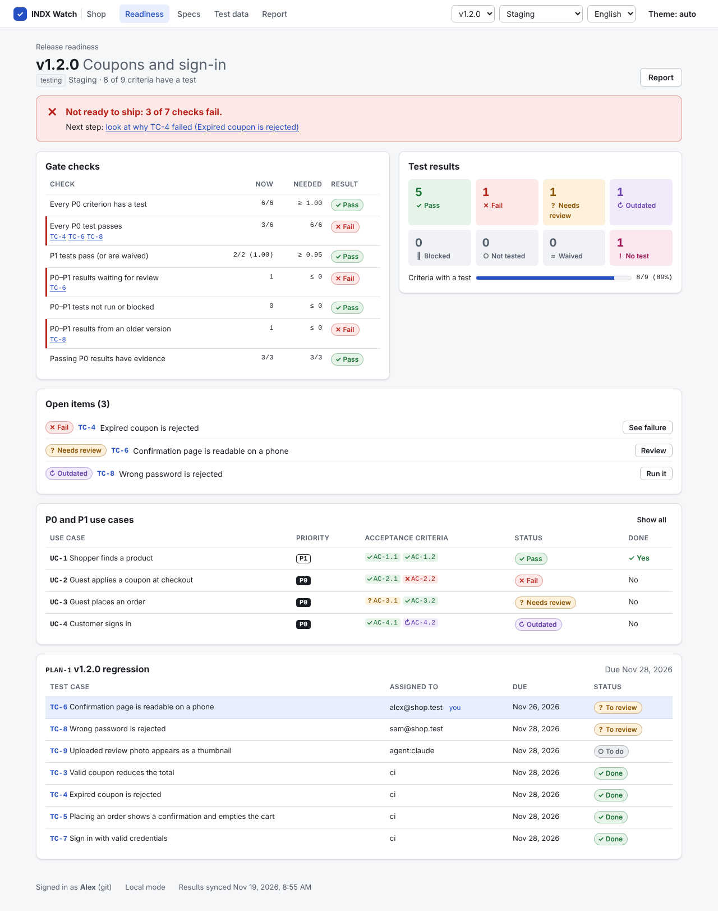
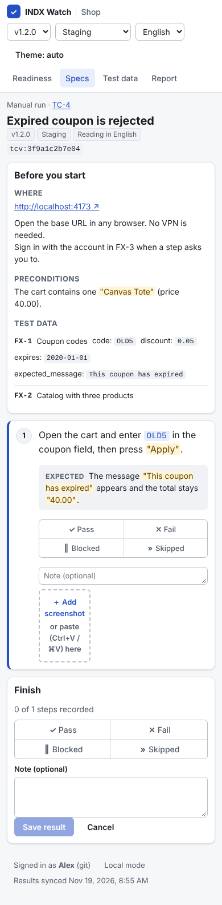
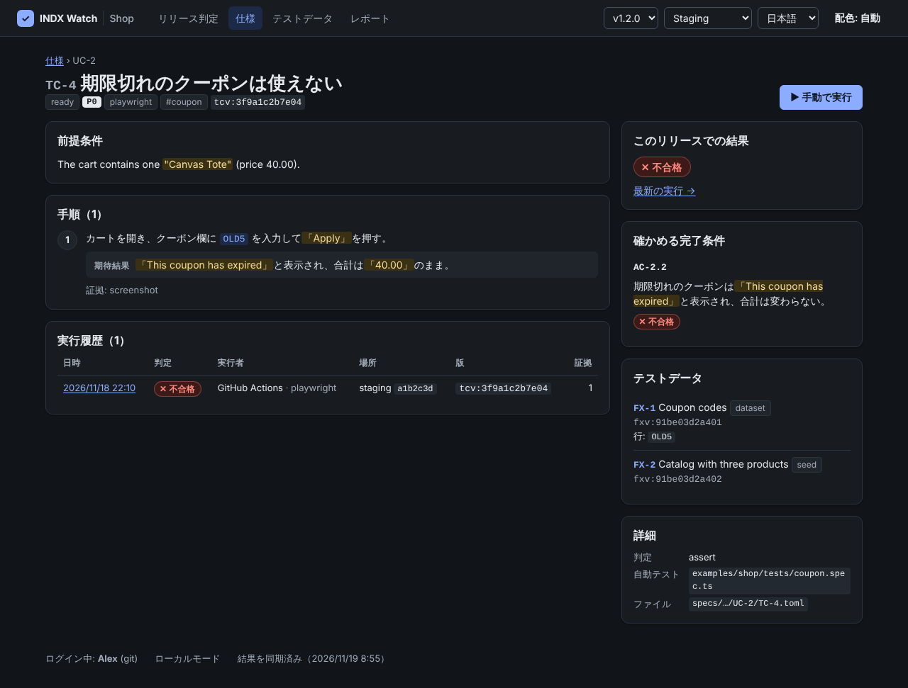

docs › design
INDX Watch screen designs
Static mockups of the web UI (packages/web, roadmap T-108) with the
examples/shop sample data: release v1.2.0 on
staging, UC-2 coupons, TC-3/TC-4, FX-1…FX-4 and PLAN-1. These are the only HTML documents in
docs/ (ADR 0011).
Screens
Release readinessCan we ship v1.2.0? Gate checks, counts, coverage, open items, P0/P1 use
cases and the plan.
Spec treeFeatures → use cases → acceptance criteria → test cases, with status at every
level.
Test caseSteps, test data, covered criteria, result in this release and run history
(TC-4).
Manual runnerStep-by-step pass / fail / blocked / skip with screenshots, notes and a final
verdict (TC-3).
Run viewer + reviewOne run, its evidence, the decision rule behind its verdict and the
human review form.
Test dataFixtures: versions, files and where they live, data preview, which tests use
them.
Customer reportThe self-contained HTML report a customer receives (no emails, notes or CI
links).
Principles
- One next step. Every screen leads with its answer (verdict, result) and one primary action.
- Calm and dense. System fonts, 14 px base, tables over cards for lists, color only where it carries meaning.
- Status is never color alone. Badges pair a color with an icon and a word; tables add a left rule on failing rows.
-
The server decides. Verdicts, statuses and the gate come from
packages/corethrough the API (packages/server/src/contract.ts); the UI only displays them. - Bilingual. UI strings in English and Japanese; content uses a translation when it is present and not stale, otherwise the source with a translation outdated badge. Literal on-screen strings ("Apply", 「Apply」) are highlighted and kept verbatim.
- Phones work. Every screen is usable at 390 px: navigation wraps, tables scroll inside their card, the runner's choices become a 2 × 2 grid.
Status palette
✓ Pass · 合格
✕ Fail · 不合格
? Needs review · 確認待ち
↻ Outdated · 古い結果
‖ Blocked · 実行不能
○ Not tested · 未実行
≈ Waived · 許容済み
! No test · テストなし
» Skipped · スキップ
Order from worst to best follows concepts.md: uncovered > fail > needs review > stale > blocked > untested > waived > pass. Plan items reuse the palette: to do = not tested, to review = needs review, done = pass.
Contrast (WCAG AA)
Ratios of the token pairs used for text. Minimum: 5.17 : 1 in light, 6.31 : 1 in dark (AA needs 4.5 : 1).
| Text on background | Light | Dark |
|---|---|---|
--text on --bg | 15.61 | 15.16 |
--text-muted on --surface | 6.56 | 7.46 |
--accent-text on --accent | 6.95 | 8.28 |
--accent on --accent-soft | 5.97 | 6.47 |
--literal-text on --literal-bg | 8.49 | 9.66 |
--pass on --pass-soft | 5.17 | 7.51 |
--fail on --fail-soft | 5.45 | 6.77 |
--review on --review-soft | 5.66 | 7.87 |
--stale on --stale-soft | 5.98 | 7.35 |
--blocked on --blocked-soft | 5.56 | 7.54 |
--untested on --untested-soft | 5.65 | 6.31 |
--waived on --waived-soft | 5.58 | 8.02 |
--uncovered on --uncovered-soft | 6.82 | 7.50 |
Files
-
tokens.css— design tokens as CSS custom properties: type, spacing, radii, colors; light by default, dark withprefers-color-schemeor[data-theme="dark"](and[data-theme="light"]to force light). Copied topackages/web/src/tokens.css; the HTML report uses the same values. -
app.css— the component styles of the web UI, copied frompackages/web/src/app.cssso the mockups render exactly like the app. mockup.css— only for these pages (notes panel, this index).-
Screen mockups are static snapshots of the SPA running with its mock API
(
VITE_MOCK=1 pnpm --filter @indx-watch/web dev), plus a notes panel. Change the app, then refresh the snapshot.
Screenshots of the built SPA


